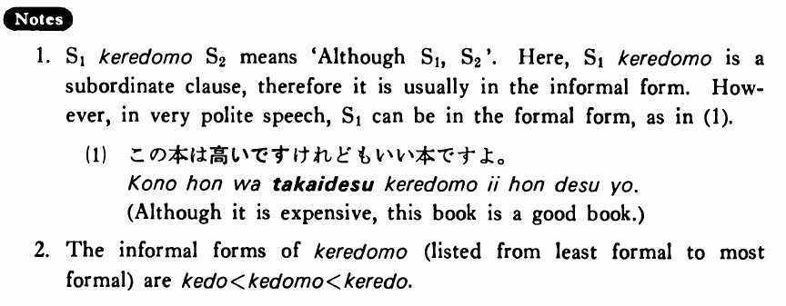

←
DoJG
→
けれども
(B. 187)
Example sentences
(ks).
私は言わなかった
けれども
トムは知っていた・いました。
Although I didn't tell him, Tom knew (about it).
(a).
この本は高い
けれども
いい本ですよ。
Although it is expensive, this book is a good book.
(b).
僕はドイツ語があまり好きじゃない
けれども
勉強しなければならない。
Although I don't like German very much, I have to study it.
(c).
大野さんは九十歳だ
けれども
とても元気だ。
Although Mr. Ono is ninety years old, he is very healthy.
Formation
Sinformal
けれども
{話す /話した}
けれども
Although someone (will) talk/talked
{高い /高かった}
けれども
Although something is/was expensive
{静かだ /静かだった}
けれども
Although something is/was quiet
{先生だ /先生だった}
けれども
Although someone is/was a teacher
